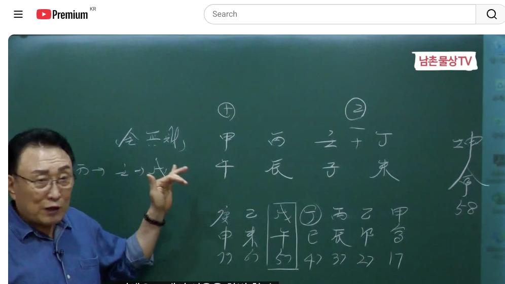

남촌물상TV 전체 문서 › 동영상 V0095
이혼을 한 번이라도 생각했다면 이 영상을 보라

| 문서 번호 | V0095 (동영상) |
|---|---|
| 영상 URL | https://www.youtube.com/watch?v=sYUn3_AWJjM |
| 영상 ID | sYUn3_AWJjM |
| 게시일 | 2024-09-30 |
| 길이 | 22:39 (1359초) |
| 조회수 | 1,366회 (수집 시점 기준) |
| 카테고리 | Howto & Style |
| 자막 | ko (자동생성) |
| 수집 시각 | 2026-08-30 17:03 (KST) |
영상 설명 (YouTube 설명 원문 그대로)
이혼을 한 번이라도 생각하고 고민 했다면 이 영상을 보라 #사주풀이 #사주팔자 #이혼운 #이혼생각
전체 자막 (488구간 · 타임스탬프 클릭 시 해당 장면으로 이동)
[0:00]정유년이 정리 합이 풀어지고 자우
[0:03]그렇죠 이럴 때 이용하는
[0:07]거예요 아 우사 차 밴드 올린 사를
[0:10]제가
[0:12]풀어드리겠습니다 정리 임자 병진
[0:15]갑보 이렇게 사주가 다
[0:18]뜨잖아요 그럼 자 첫째는 이제 그
[0:22]병화 일주의 특성이 뭔가를 먼저
[0:25]아셔야 돼요 잘 이해를 잘하셔야 돼
[0:28]경우라는 개념이 태양이라는 개념 써
[0:31]어디에 느냐에 따라서 구성이 달라진다
[0:34]이것이 이제 병화의 특징이에요
[0:37]어 태양
[0:39]빛이이 맑은 물에 떠 있을 때와 또
[0:43]그다음에 그 탁수의 물에 떠 있을
[0:45]때와 이게 차이가 있듯이 또 밤에 다
[0:48]흘러가는 물에 붙이는 거냐 또 그 어
[0:52]물이 안정 호수위의 태양이 비칠
[0:54]것인가이 세 가지로 구별할 수가 있는
[0:56]거예요 그러니까 태양이 제일 안정되게
[0:59]붙친 것은 임수의 무토가 제방이
[1:02]막아져 있고 호수에 비치는이 태양이
[1:05]제일 좋은 영을 발휘할 수 있는 거고
[1:08]그다음에 흘러간 물에 비치는 것은
[1:11]빛이 비쳐도 빛이 발산되기 때문에
[1:13]흩어지기 때문에 집중이나 모든 부분이
[1:17]잘 안 된다 이렇게 이해하시면 되고
[1:20]탁수가
[1:21]되물은 아주 좋지 않는 겁니다 건강
[1:24]문제도 있을 것이고 또 재물이 금이
[1:27]탁수가 된다면 그것이 재물의 손실이
[1:30]온 거고 자 이렇게 많은 요건을 가질
[1:33]수 있는 거예요 그래서 탁수의 개념을
[1:36]제일 안 좋은 개념으로 이해하시면
[1:38]된다 그 말이에요 셨죠 자 그래서
[1:41]이제 병화는 항시 어느 조건에서
[1:44]태양이 떠지고 있느냐 이게 제일
[1:46]핵심적인 거예요 그걸 이해를 하시고
[1:48]사주를 끄셔야 돼요 자 그러면이
[1:50]사주를 보면은 병화가 지금 뿌리가
[1:53]탄탄해 돼 있어요 경호도 있고 가오도
[1:56]있고 임자도 있고 정미도 있어요 자
[1:59]없는게 뭐없어 금 자 금 없다 그럼
[2:02]금이 없단 얘는 우리는이를 뭐라고
[2:04]하냐면 무죄 사주라고죠 무죄 자 무죄
[2:08]사주 재물이 없다 자
[2:11]그런데 우리들이 이제에 폭주로 직업을
[2:15]논할 때 직업으로 할 때 여러분들이
[2:17]그걸 아시고 넘어가셔야 돼요 항시이
[2:20]우리가 쓰는 관법을 재화 관의 관법을
[2:23]썼다 그 말이에요 그럼 이제 이런
[2:25]것을 직업을 찾 한 것이 해석하는
[2:28]방법이 있는데 일단
[2:30]병화의 관은 뭐예요 자 임수 임수의
[2:36]관은 자예요
[2:39]근데 여기에서 핵심을 딱 보시면
[2:42]여러분 이해하실 수 병화가 여기
[2:45]임수의 관에 때야 되는데 묶여 있어요
[2:48]정립 합으로 묶여 있다 그러면 자
[2:51]이렇게 정립 합으로 묶여 있기
[2:54]때문에이 병화가 임수에 뜰 수가 없어
[2:57]그럼 여기 임수는 어떤 사람 나의 남
[3:00]자 그러면이 사람이 남자의 개념으로
[3:05]봤을 때 이렇게 묶여 있다라고
[3:08]계산하면 결혼이 잘 안 되겠죠 풀어질
[3:11]때 결혼이 되는 거죠 그러면이 사람이
[3:14]자기가 화 기온이 술도 되고 여기서
[3:18]만약에 정립 한목에 뭐가 됐어요
[3:20]을목이 됐죠 자 을목이
[3:23]됐으면이 관을 쓰지 않고 을목을
[3:26]했다는 얘기 결혼하지 않으면 그말
[3:28]같은 얘기요
[3:30]하지 않게 되면은 을목은 여기에
[3:33]극락가 한다는 얘기 나오 갑목에
[3:35]그러면이 사람은 교육의 길로 가겠지
[3:39]자 그러면 교육도 어떤 교육이냐이
[3:42]사람은 갑목의 인이가 인오술 되는
[3:46]교육이요 그러니까화에 대한 교육을
[3:48]많이 한다 그러면 목과 통도 되고 다
[3:51]좋죠 그럼이 사람이 실질적인 명예를
[3:56]얻는다고
[3:57]생각하면이 정리함이 풀어져야 향이
[4:00]떴을 때 자기 명예를 얻을 수가 있는
[4:04]거예요 아 그러니까 자 그럼 명예를
[4:06]얻는다 병화 일가들은 재물보다 명예를
[4:09]우선적으로 해요 그러면 화이 병화가
[4:13]지금 정화 병화 오화 뿌리가네 자
[4:17]이런 경우를 우리가 화가 강한 경우를
[4:20]방송 예술 종교 교육 그렇다 병화
[4:22]그러 뭐라 그 방송 종교예술 교육
[4:24]이렇게 책에 나와 있어 근데 지금 그
[4:29]쓰시는 내용들을 보니까 그 책의
[4:31]개념을 잊어버 아예 이제 그때는 잊어
[4:34]지금은 뭐 생각을 딴 방으로 생각하고
[4:37]있더라 근본적인 우리 그 물상 책에
[4:41]제가 쓴 책에 화는 방송 종교 예술이
[4:46]기본이에요
[4:47]그걸이 망각을 하고 지금 글씨를 잡
[4:50]답을 써줬어 근데 거기서 한 몇 두
[4:52]한 두 분만 선 중에서도 방송
[4:54]예술이라는 기도 나와 있어요 그 다른
[4:57]사람들 그 개념 잊어보고 안해 아
[4:59]잊어버렸어 그래서 이거는 쉽게해서화에
[5:02]대한은 방송 예수 종교 교육인데 그럼
[5:05]자 교육도 되고 방송 예수도 된다
[5:07]얘기 그럼이 사람이 예술가란 얘기 쉽
[5:10]그래서이 사람은 쉽게 얘기에서 예술과
[5:13]중에서 어떤 사람이냐 그
[5:16]말이에요 어떤 사람이냐 자 그러면
[5:19]이런 사람 경우는
[5:21]자기가 햇빛을 발산 시켜서 우리에 떠
[5:25]있는 걸 좋아하기 때문에 뭔가 자기를
[5:27]홍보하고 자기를 뭔가 나타낼 수
[5:29]있는게 이 때문에이 사람은 화가야
[5:32]돼요 그러면 동양 화가냐 선형 화가냐
[5:36]동양화가 서행 하냐 이거는 뭘로
[5:39]볼까요 자 정화로 쓸 때는 결 동의한
[5:43]건 말해요 경 한목 산과 물과 달과
[5:47]이런 그림이 연상이 되죠
[5:49]근데이 사람은 병화를 쓰는 거예요
[5:53]그래서 서양 마의 그 하가다 볼 수
[5:56]있다 그까 지역가 충 볼 수 있는
[5:58]거예요 그래서이 사람 경우는
[6:01]현재 꽤 유명한 대한민국의 서양
[6:05]화가입니다 지금도 작품을 또 많이
[6:07]하고 있고요 자 그래 되는 사람이야
[6:08]그러면 자 우리가 이제 사주 원곡을
[6:12]전부 구성을 했으면 사주의 장점과
[6:14]단점을 찾아야돼 항식 단점이 뭐고
[6:17]장점이 뭐겠냐 그러면 장점은 아까
[6:21]임수의 때면 굉장히 장점이 될 거고
[6:23]임수를이 쓴다는 얘기는 아까 뭐라
[6:27]했어요 내가 관을 쓴다는 얘기
[6:29]아니에요 그러면 내가 그걸 관해 내
[6:31]남편을 쓴다는 얘기야 그러 정립
[6:34]합으로 묶였을 때는 남편 안 쓴다는
[6:35]얘기지 그러면 결혼을 안 하고 살면은
[6:38]너는 여기에 뭔가 목화 통서 교수를
[6:41]할 수 있는 사주가 되는 것이고 그
[6:43]말이지 간단하게 자 그런데 그러면
[6:46]언젠가는 저기이 그냥 가만 있을 거냐
[6:48]풀어질 거 아니에요 이때 대운을
[6:51]봐야지 대운을 자 대운을 보면은 어느
[6:54]때 풀어졌을요 정사 여기죠 정사
[6:58]정사 그러면
[7:01]자기가 이미 관을 썼다고 가정합시다
[7:03]결혼해서 살았다 과정을 해 그러면
[7:07]여기에서 풀어지지 그럼 결과 용이야
[7:11]그래서이
[7:12]사람은 정년이 정합이 풀어지고
[7:17]자유야 그렇죠 이럴 때 이용하는
[7:19]거예요 그래서 이용을 한번 할 수
[7:21]있는 사주가 된다 이런 장단점을 고할
[7:24]수 있는 거예요 그러니까 결혼을 했다
[7:27]기는 한번 짝 풀어졌다 얘기야
[7:30]풀어졌다 얘기야 근데 이것이 안전히
[7:33]살다가 안전히 풀어진 문이 불면
[7:36]떨어져 나간 거지 그러면 자
[7:38]그러면이이 관을 문제는 그냥 끝나고
[7:42]내가 관을 쓸 수 있다 그러면 자
[7:44]어느 때 정사 대운에 딱 나와야 돼
[7:47]여러분들 이제 사주 그 핵심의 장점과
[7:51]단점을 정확하게 집어
[7:53]내셔야는 그러면 쉽게에서이 사람은
[7:56]결혼 안 하고 살으면 뭐 있겠어요 안
[7:58]하고 살는 대학교수 대학 교수하고
[8:02]이때는 또 대학 교수 중에서도 자기
[8:04]자 활동이
[8:05]태양이죠 그럼 작가로서도 다
[8:08]나타내는요 근데이 사람은 결혼을 했기
[8:11]때문에 저 관을 한번 써먹은
[8:14]거예요 그래서 풀어지다 끝나는 거예요
[8:17]자 이런 과정을 겪을 수 있다는
[8:18]사주가 됩니다 여기에서 우리가 잘
[8:21]보시면 핵심적인 것은 핵심적인 어느
[8:23]때이 사람이 제일 인생이 편하고 제일
[8:27]좋 된 걸 한번 찾아봐야 우리 사주
[8:29]때 그거 봐야 돼이 사람이 전성기가
[8:31]언제
[8:33]있을까대 자이 무 대운이 좋죠 자
[8:37]무대 우냐 그러면 자 이미 여기
[8:39]정리한 걸 써먹었다는 얘기에 그럼 자
[8:41]물은 떠 있다고 봐야지 일단 남편하고
[8:44]해졌으면 물이 떠 있는 거예요 살아
[8:46]있는 거예요 그럼 이제 여기 무토가
[8:49]여기에서 무토가 막을지 거 있죠 그죠
[8:52]그럼 이제 백주 호수가 돼 내가 제일
[8:55]잘 쓰는 용가 백주 호수 왜 태풍이
[8:58]불어도 파도가 치지 않는다 이게
[9:00]호수에요 그러기 때문 안정된 물위에
[9:04]태양이 뜨고 그 말이에요 그러면 자
[9:06]내 명의가 돌출되는데 된다 그럼이
[9:09]사람이 지금 현 활동 보면 잘하고
[9:10]있어요 지금 현재 인사 갤러
[9:13]같은데도이 사람 작품도 있고 이런
[9:15]작가들도 자기 특징이 있잖아요 그근데
[9:19]이런 분은 결혼 안 했으면 편하게 살
[9:22]수 있는 상태 오히려 그래 결혼 한번
[9:24]했기 때문에 이사람 고통을 한번
[9:27]겪어야 된다 말이지 사 그
[9:30]안하면 안 되냐 이할 건데 어 근데
[9:33]이제 이런 운이 또 따라줘야 됩니다
[9:36]그럼 우리 이제이 사람 문을 보면은
[9:39]37살 때가 병 병진 거 아니에 그제
[9:43]태양이 두 개다는 얘기예요 이럴 때
[9:46]어려운
[9:48]거예요 병이 어둡다고 생각을 할 수가
[9:51]있죠 근데도 어두운 반면에 체이 두
[9:53]개 있 매
[9:55]혼란스 내가 여기을 수도 있는데 이거
[9:59]다 말이 그래서 이때 이제 좀 어려운
[10:02]결국이 있다라고 볼 수 있는 것이고
[10:05]어 말년으로 가서는 괜찮아요 근데
[10:08]해석하는 방법이 여러 가지 있는데
[10:09]만료 운이 보시면 여기 저 67대
[10:12]해석하는 사람 잘 못하는 사람들 많이
[10:14]있더라고 보니까 각기 합이 을목이
[10:17]됐잖아요네 그렇잖아요 그럼 자 을목이
[10:20]됐다는 얘기는 저 정리함이 풀어진다는
[10:23]생각은 안 하더라 얘 글쓴 것 내용을
[10:26]보니까 을목이 됐으면이 종립 한이
[10:29]풀어줘야지
[10:30]그러 내가 병화 떠 안 떠 뜨잖아요
[10:33]근데 그 그 그 푸신 내용들을 보니까
[10:37]거기서 케스가 거기서 끝나고 봐라
[10:40]내가 내용을 좀 봤어요 좀 보니까
[10:43]여기서 카피하고 울목 정리함이
[10:44]풀어졌으면 태양이 낮아 뜨는 입장이
[10:47]또 괜찮잖아요 그죠 괜찮아 그럼 자
[10:51]여기에서 이제 경금이 왔단 말이에요
[10:54]경금 자 경금이 오면 어떻게 하느냐
[10:57]잘 보세요 여기서 경금이 오면은 저
[11:00]정님 한 목이을 합이 되지 그죠
[11:03]그러면 내가 이제 묶인다 생각하도
[11:05]되죠 묶긴 생각이 돼요 그러면 자
[11:08]여기에서 합이 될 거 아닙니까
[11:11]그죠 그럼 이제 정화에 불러서 가는
[11:14]거 내가 여기서이 합을
[11:18]해서 자 정림 합의 을목이이 대운
[11:22]을경 합을 했기 때문에 신금이 됐으면
[11:25]병 합을 했다 그러면 나 수준이 뭐냐
[11:27]정화의 수준이다 게 아니라이 정화예
[11:31]그 세월로서 갈 수가 있는 거예요
[11:34]그러면 자기의이 물은 신자진이랑 개죠
[11:39]신자진 그럼 자 여기서 이제 우리가
[11:41]법을 쓸 줄 알아야 돼 신자들이 물이
[11:44]흘러간다는 얘기는 산천 좋은 좋은
[11:47]곳에서 살아라 이게 같은 얘기예요 그
[11:50]물이 흘렀다 얘기 우리 이제 여기서
[11:51]한번 생각을 잘해
[11:54]보시면이 경금이 왔다는 얘기는 여기
[11:57]신금이 붙는다고 생각하시면 돼요
[11:58]지기에가
[12:00]물론 합의해서 신금이 됐을 명정 된다
[12:03]그 말이에요 그럼 신금이 붙었어요
[12:04]자까 자 신금이 붙었다 그러면 병실
[12:09]학고 했다는 얘기 유금 올 수 있다는
[12:11]얘기예요 그렇죠 그러면 자 유금이
[12:14]왔다 그러면 여기에서 갑목에
[12:17]인술이는 신수이 될 수도 있는 거예요
[12:20]그죠 그럼 금 국이 되는 거야 그럼
[12:23]경제적으로 이사람
[12:25]괜찮겠네 이렇게 해석을 할 수가 있다
[12:27]거 아도 경제적 괜찮은 사람이다
[12:31]여기까지가 근본적인 해석을 할 수가
[12:34]있는 것이 전체 흐름을 얘기하는 거예
[12:36]이해하셨죠네 그래서 결론은
[12:41]이분이 결혼을 하지 않았으면
[12:43]교수로서의 굉장히 유능한 교수가 됐을
[12:45]것이고 또 40대가 와서 47대 정사
[12:50]대원이 오게 되면은이 사람은 자기이
[12:54]정합이 풀려서 태양님 우려 자기의
[12:57]명예를 추구할 수 있는 유명한 됐을
[13:00]것이다 근데이 사람 결혼했기 때문에
[13:02]결과적으로 한번 폭파를 꿀 수밖에
[13:04]없다 이런 결론을 가진 사주가 된다
[13:08]그 말입니다 자 이해 됐습니까 자
[13:10]그러면 이러한 이제 사주고 여러분들이
[13:14]근본적으로 절대 뭐 병화 뭐 저
[13:18]이렇게 하지 마시고 세 가지만
[13:20]얘기하라고 잖 병화 세 가지만 생각
[13:24]맑은물에 중에서도 백조 호수에는
[13:27]태양이 될 것이냐 그렇지 않으면
[13:29]흘러가 물이라도 강물위에 태양이 비칠
[13:31]것이냐 제일 나쁜 것은 착수된 물이
[13:34]태양이 떠 있는 거 이거 제일 나쁜
[13:35]거라는 말 그 세 가지 조건에서 두
[13:38]개만 충족해도 병화 이관 괜찮은
[13:41]거예요 그래서 그렇게 생각을 하면
[13:43]가장 쉽게 해석할 수 있는 거예요
[13:45]그러니까 어떤 여건에서 보면 무슨
[13:47]조건에서 세 가지 조건에서 두 가지
[13:50]수주대 좋은데이 사람은 그럼 어느 때
[13:53]요때 백조 후수가 될 때가 제일
[13:54]좋은데 인성의 전성기가 올 수 있다
[13:58]그러이 사람이 제일 전석이 나오고
[14:00]있죠 그래서 어 이분이 지금도 어
[14:02]이분 전시도 했고 아마 그렇게 해서
[14:05]굉 유명하신 분이기
[14:07]때문에 예술과의 특성과 또 결혼해서
[14:10]좋은 것과 어떻게 하면 인생일 때
[14:13]제일 좋은 행운은 어느데 있는 것이고
[14:15]너 어떻게 보좌 된 것이냐 여기까지를
[14:18]설명을 해 드릴 수가 있다니다 자
[14:20]이해 됐습니까 아 그래서 우리들이
[14:23]사주를 볼 때 이제 대운의 흐름을 쭉
[14:25]보시라고 했어요 전체 흐름에 어떤
[14:27]영향을 미쳤으면 대운에서 어떤 대운에
[14:31]내가이 인생의 제일 전성기 오겠는가
[14:34]핵심을 딱 쳐보면서 사주는 정확하게
[14:37]쉽게 볼 수 있습니다 이렇게 보면 그
[14:40]진로라는 어떤 경가 자 그럴 때 아
[14:43]여기에 이제 지지에 보면은이 사람은
[14:47]자음의 개인성이 있죠네 여기 자음
[14:50]개성이 있어요 자 여기 보면 자음
[14:52]개인성이
[14:54]있는데 묘이 외를을 때는 묘을 때는
[14:58]잘 보세요 여기에 묘를 쓴다
[15:01]가정합시다 묘가 들어간다 가정 해요
[15:04]그러면 목에 행위를 하지 않으면 좌우
[15:09]생각 목의 행위를 하게 되면 묘진이
[15:13]되지만 목의 행위를 안 하게 되면
[15:15]자목이 된다 그 말은 뭔 얘기냐 정님
[15:18]한 목이 을목이 있는 거예요 묘목이
[15:20]뭔 아시겠어요이 사주 구성이 보시면
[15:23]정림 한목에 을목의 뿌리가 묘목이다
[15:25]그 말이에요 그런데 내가 교로가 임이
[15:30]붙지않아요 그죠 목에 뿌리가 모니까
[15:33]임묘 진이 된다 그 말이야 근데 내가
[15:35]교육을 하지 않게 되면은 어떻게 자를
[15:39]가라 여기까지도 여러분들이 핵심적인
[15:41]것을 잘 파악을 할 줄 알아야 돼
[15:43]그까 똑같은 그 목을 쓰는데 자 왔네
[15:46]어떤 행위를 하면 괜찮다고 생각했어요
[15:49]목의 행위를 안 하게 되면 자유가
[15:51]되는 것이고 목의 행위를 하게 되면
[15:54]자유가 안 된다 이렇게 쉽게 이해할
[15:57]수 있어야 된다 그말 자 그다음에 또
[15:59]여기가 보니까 그 대운에 갑인 대운이
[16:03]있어요 한 그 한번 봅시다 갑인
[16:06]대운이란 것은 이미이 갑목에 꽃을
[16:09]피라고 예측해 준 거예요 그럼 너는이
[16:12]공부를 잘해라고 써진 거예요 목이라는
[16:15]교이 사람이 사주가 청하지 않아요
[16:17]착수될 개념이 변 있어요 그러 청하다
[16:20]그러면 목이 있다는 얘기는 예측이
[16:23]중다 한목에 옷을 필 수 있냐라고
[16:24]예측해 준 거란 말 이노을 이니까
[16:26]그럼 여기서 봤을 때 한번 봅시다
[16:29]17살 때가 개에요 개해 고덕 1학년
[16:33]때 그럼 개회는 내가 어두 거죠 그죠
[16:37]그러면 내가 어둡다 얘기는 여기서
[16:40]한번 더 생각을 해 볼 실 건 뭐냐
[16:42]여기에에 임수가 정님 합을 하게 되면
[16:46]임수는 뭐로 됐어 계수 여기까지를
[16:49]생각하셔야 돼 정이 안좋 여기까지를
[16:52]생각하셔야 한다고 근데 여러분이
[16:54]생각을 잘 안 해 그냥 계속 왔네
[16:57]한단 말이야 우리가 관과 관이 합했을
[17:01]때이 정화하고 임수하 합하면이 계수가
[17:04]임수가 계수로 바뀐다고 랬어요
[17:06]여기까지 생각을 하고 보시라 그
[17:08]말이에요 그러니까 청관 합의 원리의
[17:11]중요 무공 부진하게 굉장히 중요한
[17:13]거예요 그래서 이것을 밝혀지지 않는
[17:16]이상은 정확한 사기를 볼 수가
[17:18]없는거다 그러 이태 계획계 어다
[17:21]얘기요
[17:22]쉽게게 물론 을목이 개개의 성향을
[17:26]가지고 있는 거예요 그러면 자 봤어요
[17:29]풀 정 풀어요 안 풀어져요 졌어요 그
[17:32]생각을 안 하더라 얘기입니다 지금 자
[17:34]그 보니까 정림 하만 풀어져 주
[17:37]생각지 계수 봐서 풀어지는 생각을 안
[17:39]했어 자 그럼 여기에서 이제이 생각을
[17:41]안 하고 하기 때문에 결정적인 답을
[17:44]못 내린다 그 말이에요 그 말은 무슨
[17:46]얘기냐 이미 대원에서 너 갑목이
[17:49]꽃도피고 태이 더라는 얘기예요 그럼
[17:51]여기 졌으니까까 안 뜨까 태 또
[17:56]좋지 그래서 개연성이라는 것을 갖고
[17:59]만 생각하지 말고 적용을 해서 어떻게
[18:02]활용하는가 생각하시라 그 말입니다
[18:04]근데 대부인 다 그 생각은 감각을
[18:06]하고 써온 것 보니까 근데 우리들은
[18:09]봤을
[18:10]뭐냐면이 정립 합의라는 것은이 계수가
[18:13]돼 있다는 얘기를이 생각을 안 해
[18:16]내가 풀어줄 때 뭐라 정립하면 임수
[18:19]가서 풀어지고 정화가 풀어지고 계수가
[18:21]풀어진다고 강의했어요
[18:23]됐죠이 생각을 안 하고 잊어본다 그
[18:25]말이 그러니까 정적으로 안 되는
[18:28]거예요 자 괜찮았다는 얘기죠 쉽기 자
[18:32]그러면 결과적인 면에서 갑자 가볼까요
[18:35]갑자 이때가 이제 좀 생각이 봐
[18:39]혼란스럽지 갑갑하다는 얘기
[18:41]갑갑하다 본인이 그 2학년 때는 좀
[18:44]갑갑했을 것이다 근데 그 이전의 것은
[18:47]이제 넘어간 것은 어 갑자로
[18:49]넘어갑시다 자 그러면 이제 대학교 저
[18:52]쿠션 본드 갈 때가 을축 때 아닙니까
[18:54]을축년 을축년 자 을축이면 자 봐봐요
[18:59]물이니까 그냥 울목 이래 생각가지
[19:02]여기도 풀어진다 그
[19:04]말이에요 을목이 정립하면 을목이
[19:06]풀어져 여기 생각을 여러분들이 자꾸
[19:09]응용을 하셔야 돼 그 풀어지게 되면
[19:12]뜨잖아요 그죠 그럼 축소라는 거 뭐냐
[19:16]진토 축토가 착 탁수가 될 수가
[19:19]있죠네 그죠 탁수가 될 수 있어요
[19:23]그런데 본인이 어떤 선택이
[19:26]여냐이에요 그러면이 사람이 만약에
[19:29]축가 오면은 축
[19:31]오면은이 축 진축 탁수가 되까 자
[19:34]그러면 축토가 안 되는 방향에 선택을
[19:36]해줘야까 아 우리는 탁수가 됐다 해서
[19:40]너 그니까 탁수 안 좋아라고 생각할
[19:42]수 있는 그 관을 버리라고 했잖아요
[19:44]어떻게 하면 네가 수를 안 되고 잘
[19:47]갈 수 있는가 해 그랬잖아요 그것이
[19:49]우리가 할 일이야 근데 옛날 사지 못
[19:51]사람들 너래 탁수가 별로 안 줬다이
[19:54]얘기만 하지 어떻게 하면 네가 방법을
[19:58]이어나가고 할 수 있는 방법을 생각을
[20:00]안 한다는 말이지 그럼 여기 뭘 써야
[20:03]돼음을 써야 돼 그러니까 기술적인
[20:07]요인으로 갈 수 있다 화해 기술적인
[20:09]방법으로 가라 그 말이야요 그럼이
[20:10]사람이 실질적 공부도 잘
[20:13]했겠지만 자기의 어떤 기술적인 거
[20:16]예술적인 손기술을 쓰는 것은 결로
[20:18]봐요 우리가 대상 그릴 때 다
[20:20]쓰잖아요 미드 가면은 그 소질이
[20:23]굉장히 잘 좋았단 말이야 그걸 쓰게
[20:25]되면 탁수가 안 된다는 개념까지
[20:27]생각을 하셔야 한다 그 말이에요
[20:29]무조건 개념 무리다 수예요 이거 가장
[20:32]기초에서 하는 얘기 기초반에 하는
[20:34]얘기고 창업반은 네가 어떻게 하면은
[20:38]잘 될 수 있을까를 해주게 우리가 할
[20:40]일이란 말이에 그럼 유금을 쓰는 거
[20:42]너 미래 가서 가면 된다 이렇게 해도
[20:45]된다 그 말이 왜 기술적인 용이 되고
[20:47]병화 태양이 두고 한목에 꽃이 피게
[20:50]될 거 아니에요 분명히 그래서 대학은
[20:51]갈 수 있다라고 하는 거예요 근데
[20:53]대부분이 보니까 다 대학은 잘 못
[20:56]간다고 써어 그런 관계성을 여러분들이
[20:59]안 보기 때문에 그렇다는 얘기에 만
[21:00]보니까 그렇다 그 말이야 좀 더 깊게
[21:04]우리가 지금 저 여기 상담한요 뭐
[21:06]뭐예요 어떻게 하면 그분 잘되게 그
[21:08]해주자 우리가 할 일이란 말이에요
[21:09]근데 제 수야 이거 고전한 사람들 써
[21:13]먹어야지 우리는 그거 아니야 자
[21:16]유금을 쓰기 진 금도 되고 다 살축
[21:19]금도 돼요 그러니까 그 행위를 하게
[21:22]되면 돼 근데이 토라는 것이 저 토를
[21:26]어떻게 활용하느냐 이미 토라는 것 은
[21:29]사유의 개념을 가진다는 얘기는 사음이
[21:32]개념을 가란 얘기였다 그 말이야 이해
[21:34]되어요네 저 축토가 축의
[21:39]축토가 유축에 가게 되면 4와 5와
[21:43]미토가 결과적으로 태양을 밝게 해주는
[21:46]역할도 된다 그 말이지 그러니까이
[21:48]운이이 사람한테는 나쁜이 아니는
[21:51]거예요 이해 됐죠네 그래서 합의
[21:55]원리와 천간의 합의 원리나 합의
[21:57]원리를 활용을 해야 많이 정확한 답을
[22:00]얻을 수
[22:01]있다라고니다 이게 되는 겁니다 그래서
[22:03]이거은 대학도 무난하게 갈 수 있다
[22:06]지방에 계신 우리 저 주을 고시
[22:08]선생님들이 쓰시는 그 제가 봤을때 검
[22:10]검사를 해 보면 생각을 겁만
[22:13]생각을하고 깊게 생각해 우리는 뭐예요
[22:15]어떻게하면 잘되게이 사람이 해 주수는
[22:17]방법이 뭔가를 항시 영도 상담 해
[22:20]줘야 될 거 아니에요 그래서 꿈과
[22:21]희망을 주는 사람이 되 들어 줘야
[22:23]한다 근데 그것을 안고 그냥 탁수의
[22:26]개념으로만 끝났기 때문에 답이 안 놓
[22:28]것이다 그 말이고 아셨죠 그래서 어
[22:31]오늘 수업은 여기에서 마치겠습니다
[22:33]그리고 좀 더 나중에 좋은 강의로서
[22:37]또 보도하겠습니다 자 수고했습니다
[22:38]감사합니다
칠판 원국 판독 (영상 프레임을 AI가 시각 판독 · 원판 대조 필수)
坤造
천간
甲
천간
丙
천간
癸
천간
丁
지지
午
지지
辰
지지
丑
지지
未
판독 신뢰도: 중간
판독 노트: 坤命58, 대운 丁巳42 circled, 월주 癸丑 3중 정합 확정 · 시점 7:24 · 해당 장면 보기↗
자막은 YouTube에서 제공하는 한국어 자동음성인식(ASR) 트랙의 원문입니다. 고유명사·한자 용어·숫자 표기에 자동인식 특유의 오류가 있을 수 있어, 원문을 가능한 한 그대로 보존했습니다. 위에 칠판 원국 판독 섹션이 있는 영상은 화면 프레임을 AI가 시각 판독한 것으로 신뢰도 표기를 확인하고, 없는 영상은 화면 도표가 문서에 포함되지 않습니다.